The Metropolis-Hastings Algorithm¶
 -algebra
-algebra  on
on
 , a Markov chain is a process
, a Markov chain is a process
 such that
such that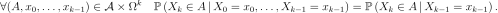
An example is the random walk for which
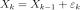
where the steps are independent and identically distributed.
are independent and identically distributed.
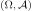
is a mapping![K: (\Omega, \cA) \rightarrow [0, 1]](../../_images/math/ede215b956fa550bab6f9b874842ade84a3104f1.svg) such that
such that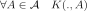
is measurable;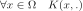
is a probability distribution on .
The kernel  has density
has density  if
if
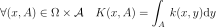
. is a homogeneous Markov Chain of
transition if
 . be a homogeneous
Markov Chain of transition on with
initial distribution
. be a homogeneous
Markov Chain of transition on with
initial distribution 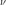
(that is ):
): denotes the probability distribution of the Markov
Chain ;
denotes the probability distribution of the Markov
Chain ;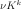
denotes the probability distribution of (
( );
); denotes the mapping defined by
denotes the mapping defined by
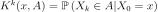
for all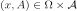
.
is said to converge in total variation distance towards
the distribution  if
if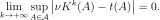
Then the notation used here is  .
.
be a (target)
distribution on , then a transition kernel
is said to be:- -invariant if
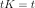
; - -irreducible if,
 such
that
such
that 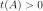
, holds.
holds.
Markov Chain Monte-Carlo techniques allows to sample and integrate
according to a distribution which is only known up to a
multiplicative constant. This situation is common in Bayesian statistics
where the “target” distribution, the posterior one
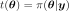
, is proportional to the product of prior and likelihood: see equation (1).In particular, given a “target” distribution and a
-irreducible kernel transition  , the
Metropolis-Hastings algorithm produces a Markov chain
of distribution with the
following properties:
, the
Metropolis-Hastings algorithm produces a Markov chain
of distribution with the
following properties:
the transition kernel of the Markov chain is
-invariant;- ;
the Markov chain satisfies the ergodic theorem: let
 be
a real-valued function such that
be
a real-valued function such that
![\mathbb{E}_{X\sim{}t}\left[ |\phi(X)| \right] <+\infty](../../_images/math/b10867e2a650b3d60e016adde824f9c0d1319c83.svg) , then, whatever the
initial distribution is:
, then, whatever the
initial distribution is: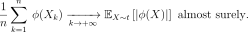
In that sense, simulating amounts to
sampling according to and can be used to integrate relatively
to the probability measure . Let us remark that the ergodic
theorem implies that
 almost surely.
almost surely.
By abusing the notation,  represents, in the remainder of
this section, a function of
represents, in the remainder of
this section, a function of  which is proportional to the PDF
of the target distribution . Given a transition kernel
of density
which is proportional to the PDF
of the target distribution . Given a transition kernel
of density  , the scheme of the Metropolis-Hastings
algorithm is the following (lower case letters are used hereafter for
both random variables and realizations as usual in the Bayesian
literature):
, the scheme of the Metropolis-Hastings
algorithm is the following (lower case letters are used hereafter for
both random variables and realizations as usual in the Bayesian
literature):
Draw
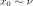
and set .
.Draw a candidate for
 according to the given transition
kernel :
according to the given transition
kernel : 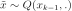
.Compute the ratio
 .
.Draw
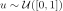
; if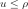
then set , otherwise set
, otherwise set 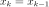
.Set
 and go back to 1).
and go back to 1).
Of course, if is replaced by a different function of
which is proportional to it, the algorithm keeps unchanged, since
only takes part in the latter in the ratio
 . Moreover, if proposes
some candidates in a uniform manner (constant density ), the
candidate
. Moreover, if proposes
some candidates in a uniform manner (constant density ), the
candidate
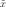
is accepted according to a ratio which reduces to the previous “natural” ratio
of PDF. The introduction of
in the ratio prevents from the bias of a
non-uniform proposition of candidates which would favor some areas of
.
which reduces to the previous “natural” ratio
of PDF. The introduction of
in the ratio prevents from the bias of a
non-uniform proposition of candidates which would favor some areas of
.
The -invariance is ensured by the symmetry of the expression of
(-reversibility).
In practice, is specified as a random walk
(
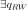
such that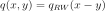
) or as a independent sampling (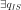
such that ), or as a mixture of random walk and
independent sampling.
is the
-irreducibility. Moreover, for efficient convergence,
has to be chosen so as to explore quickly the whole support
of without conducting to a too small acceptance ratio (the
ratio of accepted candidates ). It is usually
recommended that this latter ratio is about
), or as a mixture of random walk and
independent sampling.
is the
-irreducibility. Moreover, for efficient convergence,
has to be chosen so as to explore quickly the whole support
of without conducting to a too small acceptance ratio (the
ratio of accepted candidates ). It is usually
recommended that this latter ratio is about 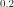
but such a ratio is neither a warranty of efficiency, nor a substitute to a convergence diagnosis.API:
Examples:
References:
Robert, C.P. and Casella, G. (2004). Monte Carlo Statistical Methods (Second Edition), Springer.
Meyn, S. and Tweedie R.L. (2009). Markov Chains ans Stochastic Stability (Second Edition), Cambridge University Press.